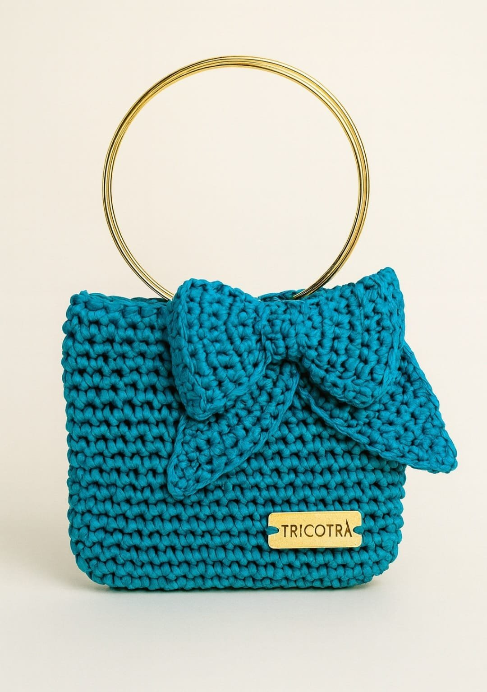
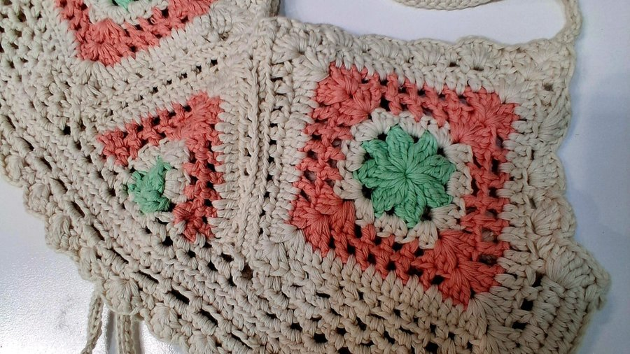
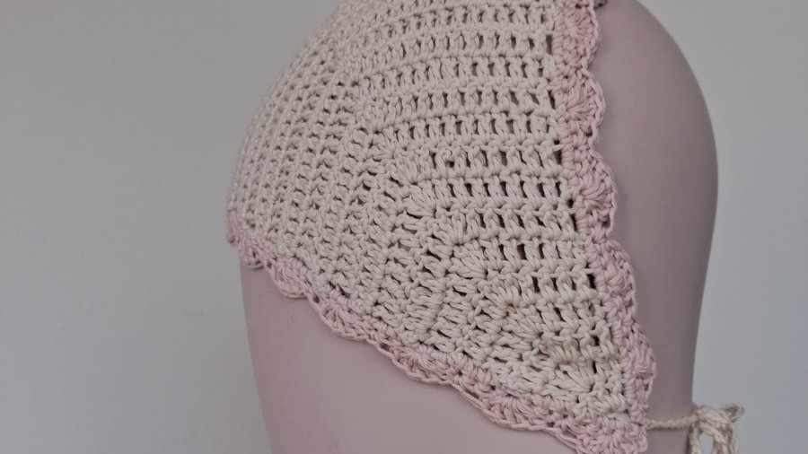
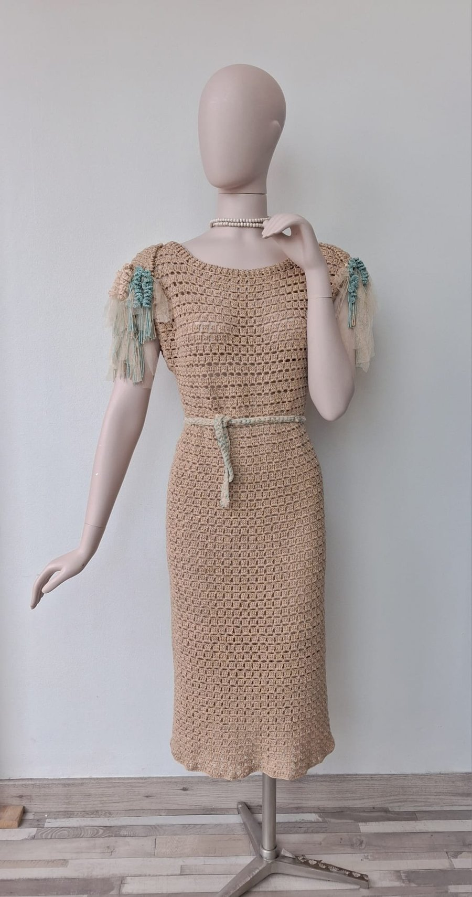
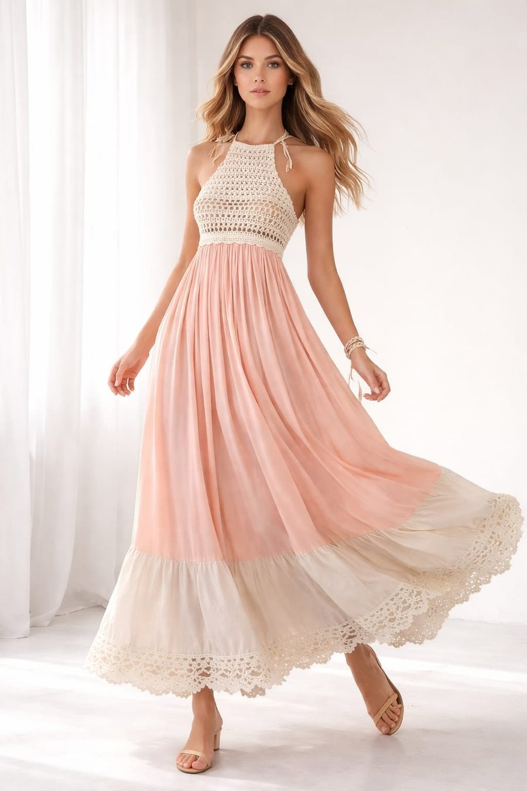
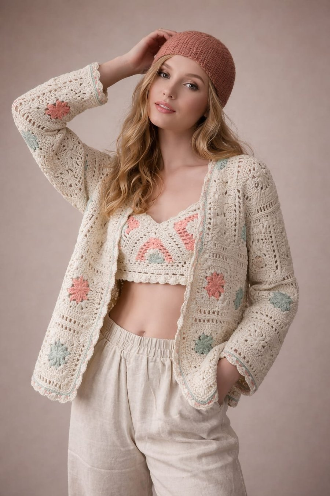
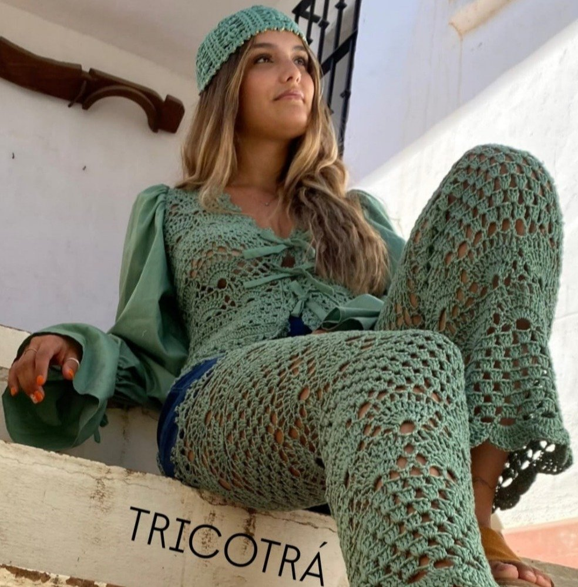
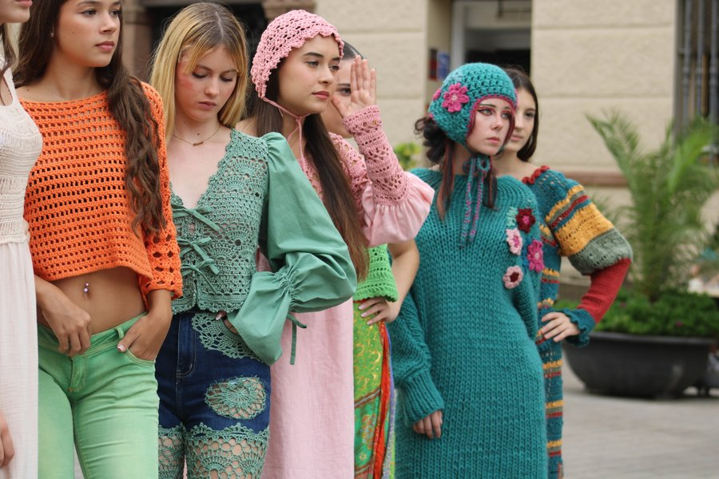

Loop hecho a mano
Hecho a mano, creado para enamorar.
Piezas unicas y unidades limitadas con el caracter colorista de Tricotra.
Encargar ahora
Ritual
Coleccion capsula crochet artesanal en algodon organico

Top RITUAL FLOR

Badana RITUAL remate ondas

Vestido RITUAL YAK

Vestido NATURA coleccion RITUAL

BOLSO RITUAL

Tricotra
Ropa a crochet para mujer hecha a mano en Espana
Nuestras prendas de crochet combinan comodidad, estilo y autenticidad. Cada puntada refleja horas de trabajo artesanal y dedicacion.
En Tricotra creamos piezas unicas que te hacen sentir especial. Descubre nuestra coleccion.
Colecciones Tricotra
Todas las colecciones
Coleccion
Noches de Menta y Frambuesa
Una linea de crochet con contraste fresco, tonos verdes, acentos frambuesa y piezas pensadas para destacar.
Ver coleccion crochetTienda
Nuestras prendas a ganchillo mas populares

Bolso MOOS CHIC
69,90 EUR
Top EXTRAVAGANZA
60,00 EUR
VESTIDO NATURE
89,90 EUR
BOLSO DE FIESTA TRICOLUXE
59,00 EUR
Por que elegir Tricotra
Comprar ropa a ganchillo online con alma artesanal
Exclusividad
Al ser piezas hechas a mano, no hay dos prendas exactamente iguales. Destacar con algo unico es un verdadero lujo.
Sostenibilidad
Elegir ropa artesanal apoya un proceso de produccion mas responsable y un consumo consciente.
Comodidad y estilo
Las prendas de crochet son suaves, ligeras y adaptables a cualquier estacion.
Como elaboramos nuestras prendas
Cada prenda es el resultado de un proceso artesanal cuidadoso.
- Seleccion del diseno: inspiracion, tendencia y tradicion equilibradas.
- Eleccion de materiales: hilos naturales, sostenibles y suaves al tacto.
- Tejido artesanal: tecnicas tradicionales de crochet realizadas a mano.
- Control de calidad: revision minuciosa de cada pieza y acabado.
- Acabado final: bordes, botones y ajustes para una prenda unica.
Opiniones
Opiniones de nuestros clientes
"El diseno es precioso y unico. Nunca habia encontrado ropa tan especial a buen precio."
Laura M.
"Compre un vestido de crochet y no puedo estar mas contenta. Se nota el trabajo artesanal y me queda perfecto."
Isabel T.
"La prenda es de una calidad excepcional, los acabados son impecables y llego super rapido."
Elena P.
Conocenos
Mas que una prenda: una experiencia hecha a mano.
En Tricotra estamos comprometidos con la calidad y la satisfaccion de nuestras clientas. Desde el momento en que haces tu pedido hasta que recibes tu prenda, cuidamos cada detalle.
Comprar una prenda artesanal es buscar una conexion con la tradicion y el cuidado que solo lo hecho a mano puede ofrecer.
Conoce mas sobre nosotros
¿Tienes una tienda?
Seleccion de piezas para boutiques y tiendas especiales.
Una seccion pensada para contacto profesional, colecciones limitadas y consultas de disponibilidad.
Preguntas de interes
Tienda online de ropa a crochet
Vestidos, tops, sueteres, cardigans, bolsos y prendas personalizadas hechas a mano.
Hilos de alta calidad, principalmente algodon, lino y lana segun la temporada y el tipo de prenda.
Si. Hay tops ligeros para primavera y verano, y piezas mas gruesas para meses frios.
Cada prenda puede incorporar guia de tallas y asesoramiento personalizado por contacto.
La web puede conectar newsletter, redes sociales y blog para mostrar nuevas colecciones y promociones.